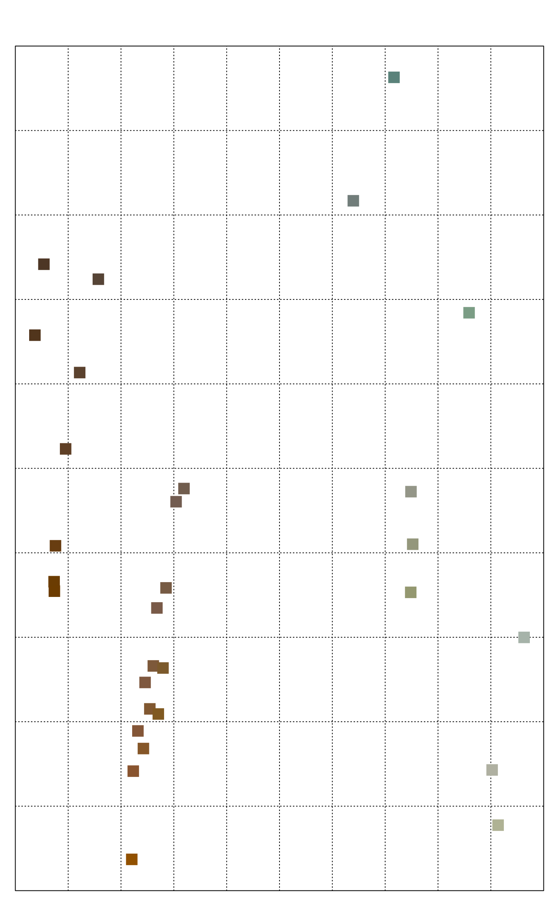
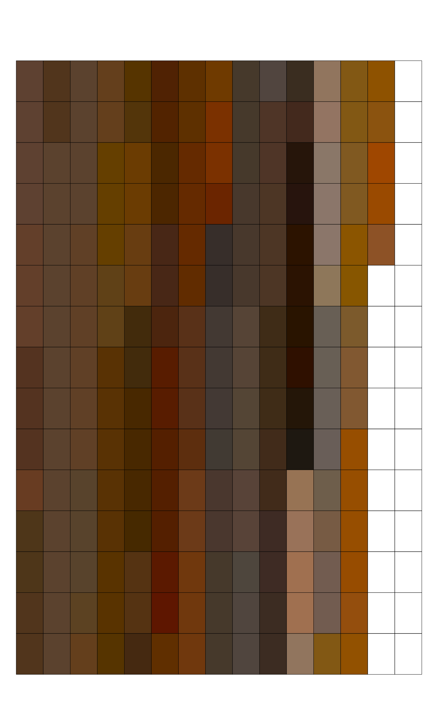
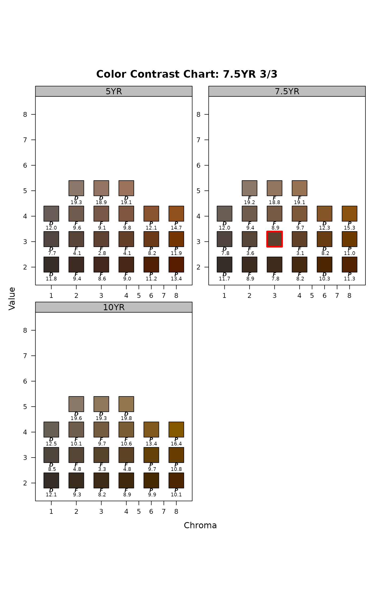

Simulate plausible soil colors based on several possible parameterization of a "range in characteristics" (RIC). Soil color RIC can be specified by a list of parameters:
soil color proportions, as output from
aggregateColor()–method = 'proportions'most likely Munsell color, CIE2000 threshold, and vector of acceptable hues –
method = 'dE00'data.frameof Munsell hue, value, and chroma representing observed soil colors –method = 'mvnorm'
Usage
simulateColor(
method = c("dE00", "proportions", "mvnorm"),
n,
parameters,
SPC = NULL
)Arguments
- method
simulation method, see details
- n
number of simulated colors per group
- parameters
a
list, format depends onmethod:proportions: output fromaggregateColor()dE00: formatted aslist(m = '7.5YR 3/3', thresh = 5, hues = c('7.5YR'))mvnorm: formatted aslist(hvc = x)
Where
mis a single representative Munsell chip,threshis a threshold specified in CIE2000 color contrast (dE00),huesis a vector of allowed Munsell hues, andxis adata.framerepresenting columns of Munsell hue, value, and chroma having at least 3 rows.- SPC
SoilProfileCollection, attempt to modifySPCwith simulated colors
Examples
# restrict examples to 2 cores
data.table::setDTthreads(Sys.getenv("OMP_THREAD_LIMIT", unset = 2))
# m: representative or most likely color
# thresh: dE00 threshold
# hues: allowed Munsell hues
p <- list(
'A' = list(m = '7.5YR 3/3', thresh = 5, hues = c('7.5YR')),
'BA' = list(m = '7.5YR 4/4', thresh = 8, hues = c('7.5YR')),
'Bt1' = list(m = '7.5YR 4/4', thresh = 8, hues = c('5YR', '7.5YR')),
'Bt2' = list(m = '5YR 4/5', thresh = 8, hues = c('5YR', '7.5YR')),
'Bt3' = list(m = '10YR 4/6', thresh = 10, hues = c('10YR', '7.5YR')),
'Cr' = list(m = '2.5G 6/2', thresh = 15, hues = c('2.5G', '2.5GY', '2.5BG'))
)
# simulate
(cols <- simulateColor(method = 'dE00', n = 10, parameters = p))
#> $A
#> [1] "7.5YR 2.5/4" "7.5YR 3/3" "7.5YR 3/2" "7.5YR 3/2" "7.5YR 3/4"
#> [6] "7.5YR 3/4" "7.5YR 3/4" "7.5YR 2.5/3" "7.5YR 3/3" "7.5YR 2.5/4"
#>
#> $BA
#> [1] "7.5YR 4/4" "7.5YR 4/5" "7.5YR 4/4" "7.5YR 4/4" "7.5YR 4/6" "7.5YR 4/4"
#> [7] "7.5YR 4/5" "7.5YR 4/4" "7.5YR 4/4" "7.5YR 4/4"
#>
#> $Bt1
#> [1] "7.5YR 4/6" "5YR 4/2" "7.5YR 4/4" "7.5YR 4/4" "5YR 4/4" "7.5YR 4/4"
#> [7] "7.5YR 4/4" "7.5YR 4/5" "7.5YR 4/4" "7.5YR 4/6"
#>
#> $Bt2
#> [1] "5YR 4/7" "7.5YR 4/6" "5YR 4/5" "5YR 4/5" "5YR 4/4" "7.5YR 4/5"
#> [7] "7.5YR 4/4" "5YR 4/4" "5YR 4/5" "7.5YR 4/3"
#>
#> $Bt3
#> [1] "7.5YR 3/6" "10YR 3/8" "10YR 3/7" "10YR 4/9" "7.5YR 4/8"
#> [6] "10YR 4/11" "10YR 4/6" "7.5YR 4/11" "10YR 3/7" "10YR 4/6"
#>
#> $Cr
#> [1] "2.5G 6/7" "2.5G 7/2" "2.5G 5/4" "2.5BG 7/4" "2.5G 5/1" "2.5BG 6/3"
#> [7] "2.5BG 6/3" "2.5G 7/3" "2.5G 6/2" "2.5G 7/1"
#>
# preview
previewColors(parseMunsell(unlist(cols)), method = 'MDS')

# another example, this time using a larger dE00 threshold
p <- list(
'A' = list(m = '7.5YR 3/3', thresh = 20, hues = c('10YR', '7.5YR', '5YR'))
)
# simulate
set.seed(54654)
cols <- simulateColor(method = 'dE00', n = 200, parameters = p)
# flatten
cols <- unlist(cols)
# tabulate, sort: most frequent color should be 7.5YR 3/3
sort(table(cols), decreasing = TRUE)
#> cols
#> 7.5YR 3/3 10YR 2.5/2 7.5YR 3/4 7.5YR 2.5/6 5YR 3/3 7.5YR 2.5/4
#> 17 6 6 5 4 4
#> 10YR 2/3 10YR 2/6 10YR 3/3 10YR 3/7 10YR 4/7 5YR 2.5/4
#> 3 3 3 3 3 3
#> 5YR 2.5/5 5YR 2.5/8 5YR 2/7 5YR 3/4 5YR 3/7 7.5YR 2.5/2
#> 3 3 3 3 3 3
#> 7.5YR 2.5/3 7.5YR 3/5 7.5YR 4/14 10YR 2.5/4 10YR 2.5/6 10YR 2.5/7
#> 3 3 3 2 2 2
#> 10YR 2/4 10YR 3/2 10YR 3/5 10YR 4/1 10YR 4/6 5YR 2.5/2
#> 2 2 2 2 2 2
#> 5YR 2.5/3 5YR 2/1 5YR 2/2 5YR 2/4 5YR 2/8 5YR 3/11
#> 2 2 2 2 2 2
#> 5YR 3/2 5YR 3/6 5YR 4/2 5YR 5/2 5YR 5/5 7.5YR 2.5/1
#> 2 2 2 2 2 2
#> 7.5YR 2.5/5 7.5YR 2.5/7 7.5YR 2/2 7.5YR 2/3 7.5YR 3/1 7.5YR 3/2
#> 2 2 2 2 2 2
#> 7.5YR 3/6 7.5YR 3/7 7.5YR 4/5 7.5YR 5/3 10YR 1/1 10YR 1/2
#> 2 2 2 2 1 1
#> 10YR 1/3 10YR 1/4 10YR 2.5/1 10YR 2.5/5 10YR 2/2 10YR 2/5
#> 1 1 1 1 1 1
#> 10YR 2/7 10YR 3/1 10YR 3/4 10YR 4/12 10YR 4/2 10YR 4/5
#> 1 1 1 1 1 1
#> 10YR 4/9 10YR 5/3 5YR 1/2 5YR 2.5/1 5YR 2.5/10 5YR 2.5/6
#> 1 1 1 1 1 1
#> 5YR 2.5/7 5YR 2/10 5YR 2/3 5YR 2/5 5YR 2/6 5YR 2/9
#> 1 1 1 1 1 1
#> 5YR 3/1 5YR 3/5 5YR 4/1 5YR 4/10 5YR 4/11 5YR 4/13
#> 1 1 1 1 1 1
#> 5YR 4/7 5YR 4/9 5YR 5/3 5YR 5/4 7.5YR 1/2 7.5YR 1/3
#> 1 1 1 1 1 1
#> 7.5YR 1/4 7.5YR 2.5/8 7.5YR 2/4 7.5YR 2/6 7.5YR 2/8 7.5YR 3/9
#> 1 1 1 1 1 1
#> 7.5YR 4/1 7.5YR 4/11 7.5YR 4/3 7.5YR 4/8 7.5YR 4/9 7.5YR 5/2
#> 1 1 1 1 1 1
#> 7.5YR 5/4
#> 1
# review colors
previewColors(parseMunsell(cols))

# what does a dE00 threshold look like on 3 pages of hue?
contrastChart('7.5YR 3/3', hues = c('10YR', '7.5YR', '5YR'), thresh = 20)
